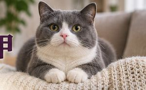
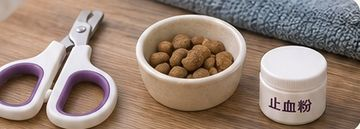
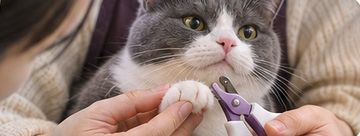
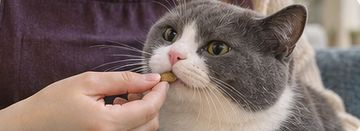
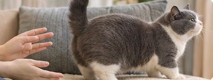
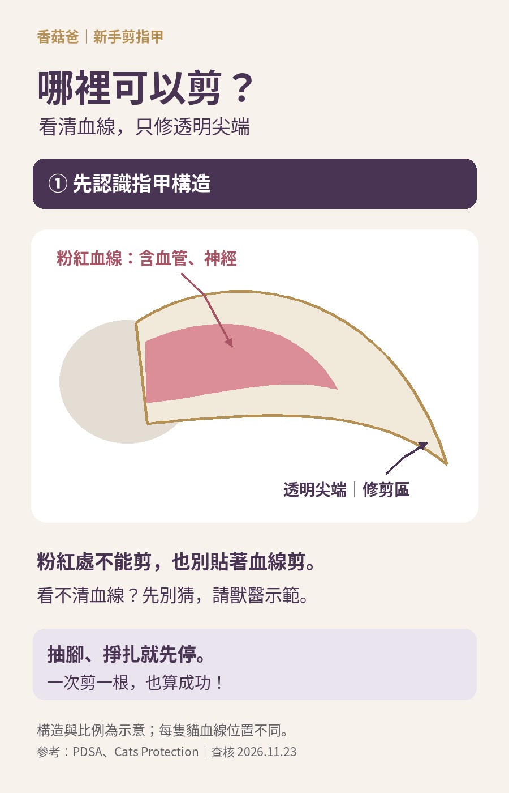

新手幫貓剪指甲香菇爸護貓小筆記
NAIL TRIM
先剪一根
先剪一根
也算成功
不用一次剪完 讓牠記得剪指甲是有好吃的事
✂️ 6 個步驟🩸 哪裡可以剪📝 剪前打勾
剪指甲不是比快
是比誰有耐心一次一根 牠不怕 下次就更順 點開每一步看細節
是比誰有耐心一次一根 牠不怕 下次就更順 點開每一步看細節

01
6 個步驟
點開看怎麼做

01先備好工具✓ 指甲剪 零食 止血粉點開看 ›
- 用貓用指甲剪 人用的指甲剪容易把貓指甲夾裂
- 零食先拆好放手邊 剪完馬上給
- 止血粉打開放旁邊 萬一剪到才不會手忙腳亂
- 找光線亮的地方 才看得清楚血線
02選牠放鬆的時候✓ 身體有支撐 不壓住點開看 ›
- 剛睡醒 吃飽 懶洋洋的時候最好
- 讓牠坐在你腿上或身邊 身體有靠的地方
- 不壓住 不硬抓 牠覺得能走 反而比較不會逃
剛玩完很嗨 或剛被嚇到 今天就先不要
03先摸爪 再輕按✓ 願意給碰 才往下點開看 ›
- 平常就摸摸腳掌 讓牠習慣被碰
- 拇指在上 食指在肉墊下 輕輕一按 指甲就會伸出來
- 不拉腳趾 不扭腳 牠一縮就放開

04看清楚 才下剪✓ 只剪透明尖端點開看 ›
- 對著光看 指甲裡面粉紅色那段是血線 有血管和神經
- 只剪前面透明的尖尖 離粉紅處留一點距離
- 深色指甲看不清 就只修最尖端 或先別剪
前腳內側還有一根比較高的「拇指」指甲 很容易忘記 也要看一下

05剪一根 就獎勵✓ 放開爪子 給一小口點開看 ›
- 剪完一根就放開爪子 給一小口零食
- 不用一次剪完 今天一根 明天兩根也可以
- 讓牠記得「剪指甲＝有好吃的」

06抗拒了 就休息✓ 先停手 下次再試點開看 ›
- 看到抽腳 掙扎 甩尾 耳朵往後壓 就停手
- 不要壓著硬剪 一次不好的經驗 下次會更難
- 換個時間 從摸腳掌重新開始
02
哪裡可以剪？
看清血線 只修透明尖端

✂️只修透明尖端前面一小截就好
🩸粉紅處不能剪也別貼著血線剪
👀看不清先別猜請獸醫示範一次
📅
多久剪一次？每個月至少看一次 尖尖的會勾到布 就是該修了
老貓比較少磨爪 指甲容易變厚變長 要多看幾眼
老貓比較少磨爪 指甲容易變厚變長 要多看幾眼
03
剪之前 打勾準備
全部勾完再開始 比較不會手忙腳亂
0 / 6
還差幾樣勾完就可以開始
!
不小心剪到怎麼辦
1
剪到出血 先別慌
沾一點止血粉 輕輕壓住指甲尖 今天就先停 給牠零食安撫
2
這些情況請聯絡獸醫
一直流血停不下來・指甲裂開或受傷・指甲彎進肉墊裡 都交給獸醫處理 不要自己硬剪
第一次不熟悉 可以請獸醫現場示範看過一次 自己剪會安心很多
NEXT
✅每天要做什麼剪指甲 刷牙 梳毛 多久一次›
🐾牠在想什麼看懂「夠了別碰我」的訊號›
👴熟齡貓 7 歲以後老貓指甲更要常看›
💬一剪指甲就暴走怎麼辦加香菇爸 LINE 把情況告訴我↗
🖼️ 看整張海報・新手幫貓剪指甲
還可以看這些
關於這一頁
內容為香菇爸整理的日常照顧方法，不是醫療建議
構造圖為示意 每隻貓血線位置不同 有任何異常請先就醫
參考：Cats Protection、PDSA
© 2026 香菇爸・原創內容